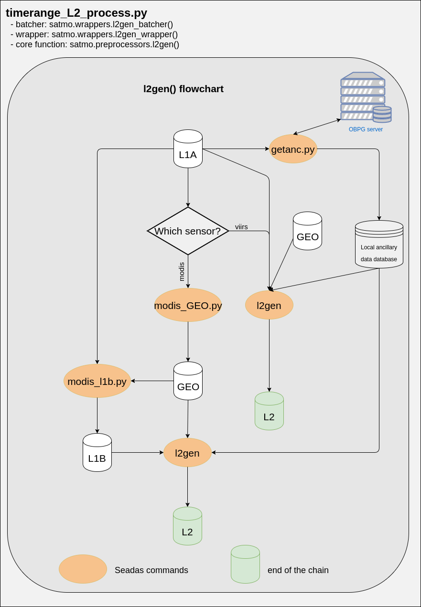

Satmo processing chains
Overall processing chain
The processing chain below is ran nightly by the near real time command of the system. Some components are simplified for improved clarity.

Detailed processing chain for generation of L2 files from level L1A
